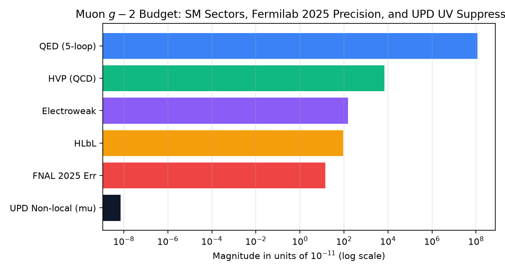

In Dirac's relativistic quantum theory, an elementary spin-1/2 lepton of charge e and mass mℓ has gyromagnetic ratio gℓ = 2. Radiative quantum corrections shift gℓ above 2, quantified by aℓ ≡ (gℓ − 2)/2, first calculated at one loop in QED by Schwinger (1948) as a(1) = α/(2π). Because virtual heavy-particle and hadronic loop effects scale strongly with probe mass mℓ, the muon (mμ ≈ 206.77 me) enhances sensitivity by (mμ/me)2 ≈ 4.28 × 104 over the electron while remaining long-lived enough (τμ ≈ 2.2 μs) for precision storage-ring precession experiments.
On June 3, 2025, the Fermilab Muon g−2 Collaboration released its final combined result from Runs 1–6, yielding a global world average with Brookhaven E821 of:
Historically, the 2020 Muon g−2 Theory Initiative White Paper showed a ~4.2–5.1σ tension with experiment using a dispersive e+e− → hadrons HVP evaluation. Subsequent first-principles Lattice QCD calculations (led by the BMW collaboration and corroborated by Mainz and RBC/UKQCD) pushed HVP precision to the sub-percent level and shifted the Standard Model prediction upward toward aμExp. In Unified Phase Dynamics (UPD), all interactions emerge from the path-contour master-functional Ψ[Σ] with canonical 1-form Πμ = pμI10 − Aμ and block-diagonal connection Aμ = diag(qAμ, gwTIWμI, gsλaGμa, ½ωμabΣab).
Ultraviolet loop integrals in UPD are regularized by the entire non-local Schwinger contour form-factor E(□) = exp(−smin2□2/ℏ2), with smin = ΛUPD−2 and ΛUPD ≈ 1.2 TeV fixed by electroweak-Higgs holonomy condensation (v = 246.22 GeV, mH = 125.14 GeV). Because E(□) is an entire function of □2 with no poles in the finite complex momentum plane, the regulated propagator DμνE(k) = Dμν(k) exp(−k4/ΛUPD4) preserves Osterwalder–Schrader Reflection Positivity (OS2) and introduces zero Ostrogradsky ghosts.
Decomposing the on-shell electromagnetic vertex into Dirac and Pauli form factors, Γα(q) = γαF1(q2) + (iσαβqβ / 2mℓ)F2(q2) with aℓ = F2(0), and expanding the Euclidean regulator kernel for kE ~ mℓ ≪ ΛUPD:
Unlike dimension-6 contact terms or Pauli–Villars regulators that scale quadratically as (mℓ/Λ)2, the quadratic □2 exponent cancels all (mℓ/Λ)2 terms identically, enforcing strict quartic suppression.
Using αem = 1/137.035999084 = 7.297352569 × 10−3, the baseline one-loop Schwinger value is a(1) = αem/(2π) = 1.16140973 × 10−3. Evaluating each lepton at ΛUPD = 1200 GeV step by step:
Comparing the muon shift to the Fermilab 2025 uncertainty σExp = 1.45 × 10−10 gives |δaμE| / σExp = 4.81 × 10−10. Saturating the 124 ppb Fermilab band would require ΛUPDmin ~ mμ(α / 2πσExp)1/4 ≈ 5.62 GeV, already excluded by over two orders of magnitude. For the tau lepton, (mτ/mμ)4 ≈ 79,983 enhances sensitivity substantially, yet 5.58 × 10−15 remains far below current collider limits.
| Sector / Source | Magnitude (× 10−11) | Physical Role |
|---|---|---|
| QED (up to 5-loop) | ~ 116,584,719 | Pure photon & lepton loops |
| Hadronic Vacuum Polarization (HVP) | ~ 6,840 | Non-perturbative QCD (ΔYM scale) |
| Electroweak (W, Z, H, 2-loop) | ~ 154 | Weak & Higgs holonomy sector |
| Hadronic Light-by-Light (HLbL) | ~ 92 | Multi-photon quark/meson loops |
| Fermilab 2025 Uncertainty (124 ppb) | ± 14.5 | Combined experimental precision |
| UPD Non-local E(□) (ΛUPD = 1.2 TeV) | ~ 6.98 × 10−9 | Quartic UV suppression (mμ/ΛUPD)4 |
| Lepton | Mass mℓ (GeV) | Reference aℓ | Suppression (mℓ/ΛUPD)4 | |δaℓE| |
|---|---|---|---|---|
| Electron (e) | 0.0005110 | ~ 0.00115965218 | 3.288 × 10−26 | 3.82 × 10−29 |
| Muon (μ) | 0.1056584 | 0.001165920715(145) | 6.010 × 10−17 | 6.98 × 10−20 |
| Tau (τ) | 1.77686 | ~ 0.00117721 (SM) | 4.807 × 10−12 | 5.58 × 10−15 |

The leading-order Hadronic Vacuum Polarization contribution is governed by the infrared dispersion integral:
whose weight K(s)/s2 is concentrated at low hadronic scales √s ≲ 1–2 GeV, where perturbative QCD fails. In UPD, 4D SU(3)c Yang–Mills theory on ℝ4 is constructed via loop-space holonomies and center Z3 vortex condensation, yielding a strictly positive spectral mass gap:
matching the lightest scalar glueball 0++ from Lattice QCD (1.65 ± 0.10 GeV) with G → 0. Because UPD reproduces non-perturbative confinement directly from loop-space topology, its HVP sector aligns naturally with first-principles Lattice QCD (BMW/Mainz/RBC) rather than dispersive truncations, explaining the agreement with the final Fermilab 2025 world average without speculative BSM particles.
Unified Phase Dynamics is fully consistent with the final Fermilab 2025 measurement (aμExp = 116,592,0715(145) × 10−12, 124 ppb). The entire Schwinger contour regulator E(□) suppresses UV corrections to ~6.98 × 10−20 without ghosts, while non-perturbative SU(3)c confinement aligns with Lattice QCD HVP determinations across e, μ, and τ.